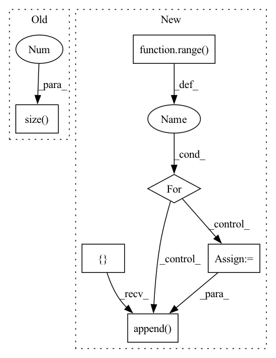

Pattern ID :14248
Before Change
// batch-wise random inverse normal vector (prob: 0.5)
if random_inv:
random_mask = torch.randint(0, 2, (group_xyz.size(0 ) , 1)).float() * 2. - 1.
random_mask = random_mask.to(unit_nor.device)
if not is_group:
unit_nor = unit_nor * random_maskAfter Change
// batch-wise random inverse normal vector (prob: 0.5)
if random_inv:
batch_prob = np.random.rand(offset.shape[0]) < 0.5
random_mask = []
sample_offset = [0] + list(offset.cpu().numpy())
for idx in range( len(sample_offset) - 1) :
sample_mask = torch.ones((sample_offset[idx+1] - sample_offset[idx], 1), dtype=torch.float32)
if not batch_prob[idx]:
sample_mask *= -1
random_mask.append( sample_mask)
random_mask = torch.cat(random_mask, dim=0).to(unit_nor.device)
// random_mask = torch.randint(0, 2, (group_xyz.size(0), 1)).float() * 2. - 1.
// random_mask = random_mask.to(unit_nor.device)
if not is_group:In pattern: SUPERPATTERN
Frequency: 4
Non-data size: 6
Instances Fragment ID: 47280576
Project Name: hancyran/repsurf
Commit Name: e320999634bd03b5020e1af0092663c02c862ba8
Time: 2022-09-18
Author: ranhaoxi@gmail.com
File Name: segmentation/modules/recons_utils.py
M Class Name: AnonimousClass
N Class Name: AnonimousClass
M Method Name: cal_normal(4)
N Method Name: cal_normal(3)
M Parent Class:
N Parent Class:
M File Name: segmentation/modules/recons_utils.py
N File Name: segmentation/modules/recons_utils.py
M Start Line: 28
M End Line: 29
N Start Line: 10
N End Line: 37
Before Change
def forward(self, input, hidden_state=None):
output = []
for step in range(input.size(1 ) ):
// Compute current time-step
hidden_state = self.rnn_cell(input[:, step, :, :, :], hidden_state)
output.append(hidden_state)After Change
for l, (gru_cell, hid_dp) in enumerate(zip(self.cell_list, self.hidden_dps)):
h = hidden_state[l]
output_inner = []
for t in range( seq_len) :
h = gru_cell(input=cur_layer_input[t], h_prev=h)
output_inner.append( h)
cur_layer_input = torch.stack(output_inner) // list to array
if l != self.n_layers:
cur_layer_input = hid_dp(cur_layer_input) Fragment ID: 47280579
Project Name: openclimatefix/skillful_nowcasting
Commit Name: 02c5ceadd01484d6ac8bce848ff76446fe7a6917
Time: 2021-10-18
Author: jacob@bieker.tech
File Name: nowcasting_gan/layers/ConvGRU.py
M Class Name: ConvGRU
N Class Name: ConvGRU
M Method Name: forward(3)
N Method Name: forward(3)
M Parent Class: nn.Module
N Parent Class: nn.Module
M File Name: nowcasting_gan/layers/ConvGRU.py
N File Name: nowcasting_gan/layers/ConvGRU.py
M Start Line: 269
M End Line: 276
N Start Line: 196
N End Line: 221
Before Change
embeddings = self.tgt_embed(tgt)
// Memory querying and responding for textual features
dummy_memory_matrix = memory_matrix.unsqueeze(0).expand(embeddings.size(0), memory_matrix.size(0), memory_matrix.size(1 ) )
//dummy_memory_matrix = torch.stack([self.memory_matrix[labels[i] == 1, :] for i in range(embeddings.size(0))])
responses = self.cmn(embeddings, dummy_memory_matrix, dummy_memory_matrix)
embeddings = embeddings + responsesAfter Change
//dummy_memory_matrix = memory_matrix.unsqueeze(0).expand(embeddings.size(0), memory_matrix.size(0), memory_matrix.size(1))
//dummy_memory_matrix = torch.stack([self.memory_matrix[labels[i] == 1, :] for i in range(embeddings.size(0))])
//responses = self.cmn(embeddings, dummy_memory_matrix, dummy_memory_matrix)
responses = []
for i in range( embeddings.size(0)) :
query_matrix = []
for j in range(len(labels[i])):
if labels[i, j] == 1:
if j != len(labels[i])-1:
query_matrix.extend(memory_matrix[j*self.num_prototype:(j+1)*self.num_prototype, :])
else:
query_matrix.extend(memory_matrix[j * self.num_prototype:, :])
query_matrix = torch.stack(query_matrix, 0)
query_matrix = query_matrix.unsqueeze(0)
response = self.cmn(embeddings[i].unsqueeze(0), query_matrix, query_matrix)
responses.append( response.squeeze(0))
responses = torch.stack(responses, 0)
embeddings = embeddings + responses
// Memory querying and responding for textual features
Fragment ID: 47280565
Project Name: markin-wang/xpronet
Commit Name: 8a47fdb250bd2c0c90632d5faf0fa10481af5ee7
Time: 2021-11-21
Author: cserwj@gmail.com
File Name: modules/base_cmn.py
M Class Name: Transformer
N Class Name: Transformer
M Method Name: decode(8)
N Method Name: decode(7)
M Parent Class: nn.Module
N Parent Class: nn.Module
M File Name: modules/base_cmn.py
N File Name: modules/base_cmn.py
M Start Line: 74
M End Line: 79
N Start Line: 75
N End Line: 97
Before Change
assert inMask.dim() == 4, "mask must be 4 dimensions"
inMask = inMask.float()
ntimes = 2**nlayers
inMask = F.interpolate(inMask, (inMask.size(2)//ntimes, inMask.size(3 ) //ntimes), mode="nearest")
inMask = inMask.detach().byte()
return inMaskAfter Change
assert inMask.dim() == 4, "mask must be 4 dimensions"
assert inMask.size(0) == 1, "the first dimension must be 1 for mask"
inMask = inMask.float()
convs = []
inMask = Variable(inMask, requires_grad = False)
for id_net in range( conv_layers) :
conv = nn.Conv2d(1,1,4,2,1, bias=False)
conv.weight.data.fill_(1/16)
convs.append( conv)
lnet = nn.Sequential(*convs)
if inMask.is_cuda:
lnet = lnet.cuda() Fragment ID: 47280586
Project Name: kumapowerliu/rethinking-inpainting-medfe
Commit Name: 17d04d208950c9c4e2e8bc5251cf06205ec15285
Time: 2020-11-07
Author: 33801357+KumapowerLIU@users.noreply.github.com
File Name: util/util.py
M Class Name: AnonimousClass
N Class Name: AnonimousClass
M Method Name: cal_feat_mask(3)
N Method Name: cal_feat_mask(2)
M Parent Class:
N Parent Class:
M File Name: util/util.py
N File Name: util/util.py
M Start Line: 78
M End Line: 83
N Start Line: 76
N End Line: 93